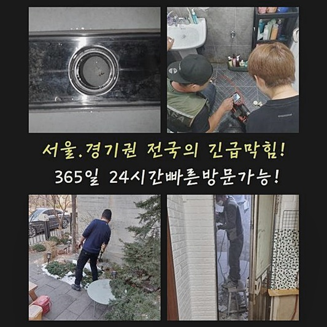
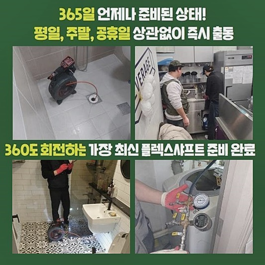
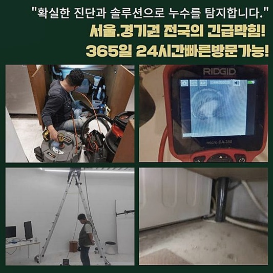
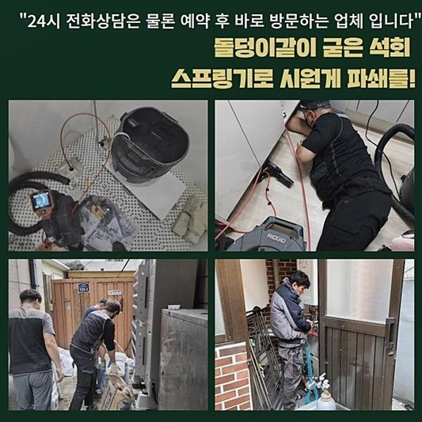
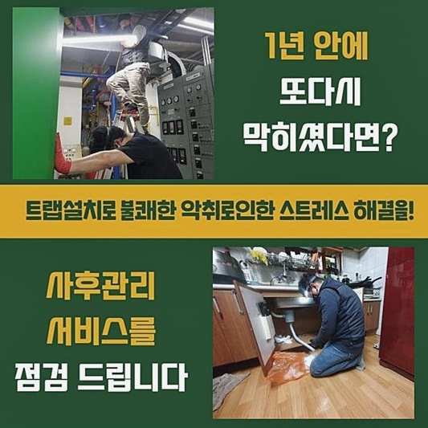
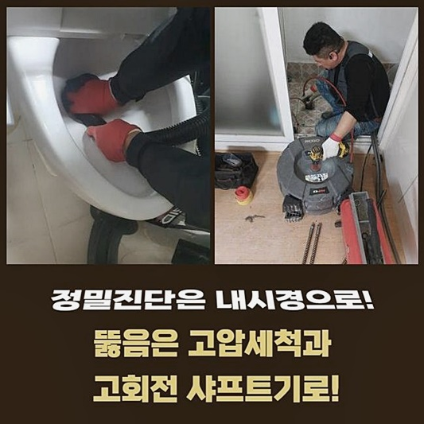
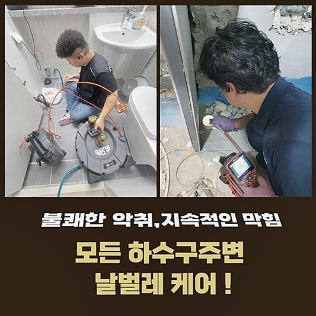

🏠 서초구 서초동싱크대배수관막힘 염곡동 냄새차단 수리업체
용인시 처인구 배관막힘 전문 시공 후기

📋 작업 개요
- 위치: 용인시 처인구, 수원시 영통구, 화성시 동탄
- 서비스 유형: 배관막힘, 내시경점검
- 작업 일시:
- 업체명: 하수구수사대 (010-5615-2118)
🔍 문제 상황
서초구 서초동싱크대배수관막힘 염곡동 냄새차단 수리업체
수많은 배수장애들을 고쳐내고 처리하는 전문인인데요
의뢰자가 문의가 필요할 경우 응당 문제상황에 대해서 도움을 드립니다
며칠전 욕실공간의 배수구가 심상치않다는 문제로 빠르게 현장으로 내방드렸죠
화장실의 경우 사용후에 머리카락등과 여러가지의 이물들이 침전되어 통수에 불능이 야기되는 사례들이 상당해요
이같은 경우에서는 근방에서 판매하는 용품들로는 내부 상태를 시정해내는게 어렵기에 저희처럼 전문성이 뛰어난 장비를 이용해서 문제양상을 보이는 부분을 청소해줘야하죠
자주는 아니지만 가열된 물을 흐르게 해주어 문제가 생긴 원인을 제거시키도록 시도해보시는 고객들도 계세요
위같은 방법들도 해결을 기대하기엔 어렵습니다
끓는 물들을 배출시키면 고착물의 경우 더욱이 굳는 특징을 띄므로 배수문제를 심화시키는데요
이때문에 하수구의 증세는 성능이 좋은 장비를 통해야되겠습니다
작업들을 실시할때에는 사용하는 기기를 점검의 일환으로 체크해보고 고객이 알려주신 현장으로 재빨리 달려갔죠
단순한 하수구의 문제말고도 설명드린것처럼 머리카락과 석회질 성분의 잔여물질들도 문제를 일으킵니다

🔎 원인 분석
💡 전문가 진단: 정밀 진단 장비를 사용하여 슬러지의 고착 여부를 판명하고 타격/세척 작업을 실시했습니다.
그렇기에 주기를 설정해 점검을 해줘야합니다
고객님께는 작업방식을 설명하고 바로 근원을 짚고서 불편을 어떤 방식으로 풀어나가는지 꼼꼼히 말씀드릴게요
증세가 심각한 지점은 욕실에 위치한 하단배수구였죠
확인해보았더니 쉽게 볼 수 있는 사각형태의 부품이 아니라 트렌치부품으로 보여졌어요
물이 안빠짐과 동시에 예기치못한 역류해버리는 증상도 지속되고 있었습니다
일반적이라면 트랩부품을 거쳐 하수관로로 흘러가지않은 잔여물은 걸러진 후 이물을 제외한 오수들을 하단으로 이동시키는 이점들이 있어요
그러나 내부에 있던 오염물이 배관 위로 역류하게되면서 트랩부품도 무용지물인 상태였답니다
의뢰인분은 증세들이 심해지고 샤워실을 전혀 쓸 수 없겠다고 불편들을 말씀해주셨는데 피해규모가 클 것으로 판단되었는데요
위처럼 화장실공간의 설비쪽에서 문제들이 생기면 다양한 측면에서 불편이 발현될 가능성이 커요
이로인해 빠르고 제대로 원인을 시정하는것이 가장 중요해요
먼저 증상의 원인부터 인지해야되겠습니다
상단의 렌즈들이 연결된 내시경장치로 배수관으로 이용할때에는 내부상태를 확인해주며 작업 스팟을 특정해 해결을 진행하게됩니다
이로인해 다양한 문제들이 양산될 경우에 꼭 이용되어야하는 장비입니다

🔧 작업 과정
초입에서 이물질이 많은 까닭에 장비를 하수도의 내측으로 삽입하는게 힘들었죠
그러나 증상에 있어서 좌절할 수 없습니다
꾸준히 밀어넣으니 드디어 장비를 삽입시켰고 깊은곳도 확인하기위해 안쪽을 관찰하던중에 시야가 확보가 안되었어요
엘보구간엔 슬러지가 상당했어요
그리고 내측을 제대로 파악못하는걸로 파악하건대 바깥쪽과같이 심부에도 상당수의 이물이 쌓인걸 볼 수 있었어요
재차 하수라인으로 내시경장비를 넣으니 벽에선 바닥잔해로 파악되는게 확인되었죠
하수도의 심층부엔 서로 뒤섞인 형태로 자리잡은 이물들이 확인되었어요
장비라인을 사용해도 틈들은 확인되지 않았지만 흡착된 잔여물은 확실하게 확인할 수 있었어요
이물들이 파악되지 않았어도 흡착된 이물들이 배수관의 끝머리서부터 축적된것을 알 수 있었어요
해결이 쉽지않았던 배관컨디션이였으나 다급한 의뢰였기떄문에 그저 방임적인 태도로 일관할 수 없었어요
하수도에 존재하던 대형의 오염원은 수작업으로 걷어내주고 안쪽에 쌓여버린 이물의 경우엔 샤프트 장치를 이용하여 깨끗하게 해줄 예정이였죠
전문가용 기계를 가용하여 빠르게 시정했어요
하지만 슬러지들을 제거시키며 이해가 되지 않던 것이 있었는데요
어째서 장판의 일부분이 배수관에서 존재하는건지 이해할 수 없었는데요
이런 의문을 풀지못하고 작업 도중에 고객분은 이런 사안에 대하여 운을 떼기 시작하셨어요
듣고보니 며칠전 도배를 했는데 예상컨대 잔해들이 배수구로 흘러들어간걸로 예상된다고 하셨죠
이러한 공사들이 진행되었을땐 폐기물은 전문가가 폐기시키는게 맞습니다만 간혹 이에 대해 소홀한 업체일 경우 이같이 바람직하지 않은 방법으로 잔해온수를 버립니다
추측하건대 저희업체가 내방드렸던 고객님의 댁에서는 이와같은 문제로 불편을 반복적으로 받아오고 계셨습니다
여기저기 장판이물질들이라는 폐기물이 배수과정을 방해하는 바람에 배출되어야할 하수들이 흘러나가질 못했어요
깨끗해질때까지 제거와 석션을 수행하니 끝내 하수관을 통수시켜냈습니다


✅ 작업 완료
통수절차가 잘 이뤄지는지 테스트까지 하였더니 시원하게 통수가 이뤄졌죠
작업을 하고난뒤 오늘과같이 흐르는게 정상이지만 하수라인이 이물로 막히게되며 정체하다가 역류문제들을 발생된거에요
이런저런 현장들을 시정해왔으나 이러한 문제를 마주할때면 기분이 좋지않고 의뢰자가 감내했을 피해에 깊은 공감이 되는데요
이것처럼 증상을 깔끔하게 수리해내고 저희들도 뒷정리를 하고 철수하였어요
갑작스럽게 혹여라도 통수오류가 생겼을 시 오늘의 내용을 기초로 해 조속히 처리하시는 게 합리적입니다!
이외에 궁금한 것이 존재하신다면 서둘러 연락주시어 질의해도 좋으니 아무쪼록 저희를 찾아주시면 여러분께 도움을 드릴 수 있도록 할게요!




⚠️ 하수구 배관 막힘 예방 및 관리 가이드
- ✅ 머리카락, 비닐, 물티슈 등 물에 분해되지 않는 이물질은 절대 흘려보내지 마세요.
- ✅ 기름기 많은 식기는 설거지 전 키친타올로 먼저 기름때를 닦아내세요.
- ✅ 주기적으로 배수구에 뜨거운 물을 가득 부어주어 유지방 고착을 방지하세요.
- ✅ 작업 후 1년 이내 재발 시 무상 A/S 보증 서비스를 제공합니다.
💡 핵심 정리
- 확실한 장비 작업(내시경 점검 및 샤프트 스케일링)으로 원인을 뿌리 뽑습니다.
- 작업 후 1년 이내에 동일한 부위 재발 시 100% 무상 A/S 서비스를 보장합니다.
- 서울 · 경기 · 인천 전 지역에 24시간 언제든 긴급 출동할 수 있도록 항시 대기 중입니다.
❓ 자주 묻는 질문 (FAQ)
🚨 용인시 처인구 배관막힘 문제로 고민이신가요?
정확한 원인 진단과 확실한 시공으로 재발 없는 해결을 약속드립니다.
24시간 긴급 출동 | 서울 · 경기 · 인천 전지역 | 1년 내 재발 시 무상 A/S